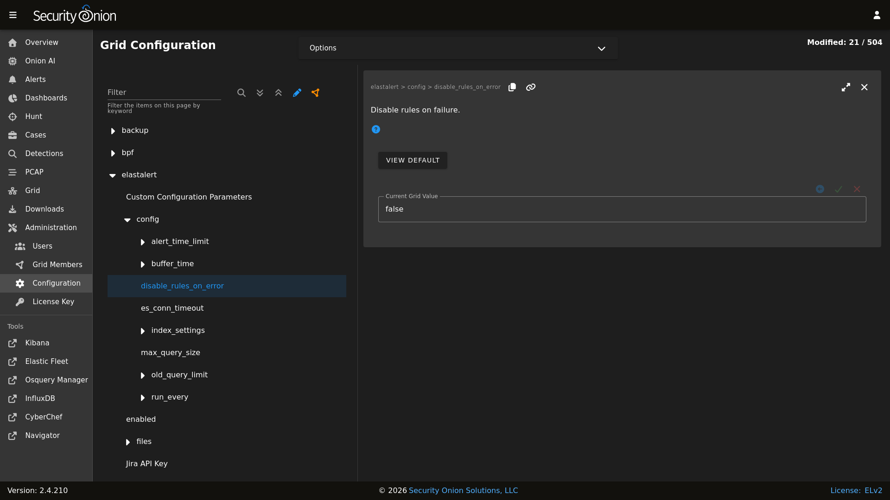

ElastAlert 2
From https://elastalert2.readthedocs.io/en/latest/elastalert.html#overview:
ElastAlert 2 is a simple framework for alerting on anomalies, spikes, or other patterns of interest from data in Elasticsearch.
ElastAlert queries Elasticsearch and provides an alerting mechanism with multiple output types, such as Slack, Email, JIRA, OpsGenie, and many more.
Sigma Rules
The Detections module will generate ElastAlert 2 compatible rules automatically for all Sigma detections. There is no need to manually modify the generated rules on disk. Further, any modifications will be overwritten during the next Sigma rule synchronization.
Adjusting a Sigma rule should always be done via the Detections screen.
See the Notifications section for information on how to enable outbound notifications via the Detections module.
Custom Rules
Custom ElastAlert 2 rules, which are not associated to the Detections module, can be added to the Security Onion manager node inside a custom subdirectory under the /opt/so/rules/elastalert/rules/ directory. For example, create a subdirectory called /opt/so/rules/elastalert/rules/custom/ and place custom rules within that directory.
Warning
Do not modify or add rules to the /opt/so/rules/elastalert/rules/ directory itself as those rules are overwritten by the Detections module.
Refer to the ElastAlert 2 documention, linked above, for detailed information on how to write custom rules. Be aware that writing rules requires an in-depth understanding of Elasticsearch document records, their data structure, and other related concepts.
Diagnostic Logging
Elastalert diagnostic logs are in /opt/so/log/elastalert/ and may also appear in the Docker logs for the container. To view container logs run the following command on the manager:
sudo docker logs so-elastalert
ElastAlert 2 stores rule status information, such as number of hits, times each rule last ran, etc to Elasticsearch indices. This data can helpful in assisting with troubleshooting custom rules. Searching in Dashboards, Hunt, or Kibana. Security Onion Console (SOC) does not automatically include the elastalert indices by default. If you would like to include them, you can adjust the appropriate configuration setting. In Security Onion Console (SOC), navigate to Administration –> Configuration. At the top of the page, click the Options menu and then enable the Show advanced settings option. Then filter for elastic.index to locate the setting. On the right side of the screen, add *:elastalert* to the existing index setting. The updated setting should resemble the following:
*:so-*,*:endgame-*,*:logs-*,*:elastalert*
so-elastalert-create
so-elastalert-create is a tool created by Bryant Treacle that can be used to help ease the pain of ensuring correct syntax and creating Elastalert rules from scratch. It will walk you through various questions, and eventually output an Elastalert rule file that you can deploy in your environment to start alerting quickly and easily.
so-elastalert-test
so-elastalert-test is a wrapper script originally written by Bryant Treacle for ElastAlert’s elastalert-test-rule tool. The script allows you to test an ElastAlert rule and get results immediately. Simply run so-elastalert-test, and follow the prompt(s).
Note
so-elastalert-test does not yet include all options available to elastalert-test-rule.
Performance
For better performance, avoid writing rules that return large numbers of records. Instead, use the use_count_query: true in each rule file. This will only return counts of matching records and not the records themselves.
Timeframe
For queries that span greater than a minute back in time, you may want to add the following fields to your rule to ensure searching occurs as planned (for example, for 10 minutes):
buffer_time:
minutes: 10
allow_buffer_time_overlap: true
Configuration
You can modify ElastAlert 2 configuration by going to Administration –> Configuration –> elastalert.
{kind=link}

More Information
Note
For more information about ElastAlert, please see https://elastalert2.readthedocs.io/en/latest/.